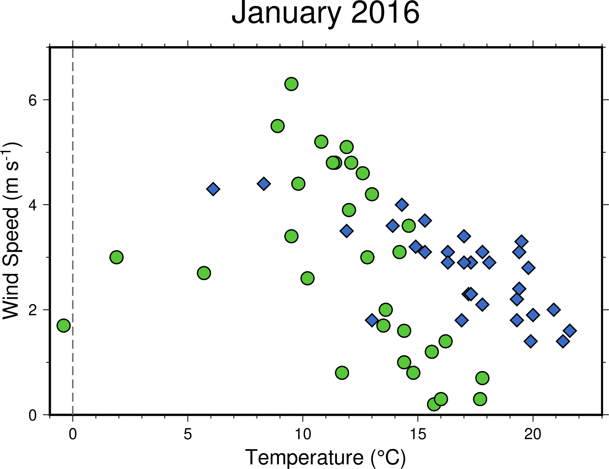

Scatter Plot
Contents
4. Scatter Plot#
Attention
This instruction is for the Modern Mode in GMT 6. For making the same map using the GMT 6 Classic Mode or GMT 4-5, Please go to this page (only final script available).
The most common and important graph type for data analysis is definitely X-Y scatter plots. We have learned that GMT is excellent for making maps, but in fact, it is also capable of processing non-spatial data and visualized them pretty well. In this chapter, we will introduce a command used to draw points, lines, and polygons: plot (or psxy in older versions of GMT). We will also show some associated tricks for plotting figures, which are useful for both spatial and non-spatial data.
4.1. Goal#
Using the data from the Central Weather Bureau, Taiwan, Make an X-Y scatter plot showing wind speed versus temperature. We use the daily weather data in January 2016 from two weather stations: Zhuzihu (竹子湖) and Su’ao (蘇澳). Each station is labeled with a distinct color and marker. We can see something interesting from the plot:
There is a negative correlation between wind speed and temperature; that is, the lower the temperature, the faster the wind blows.
The temperature in Zhuzihu is usually lower than Su’ao. Also, there are still few days warmer than 20 degrees Celcius in Su’ao.
There was one day when the temperature in Zhuzihu dropped below 0 degrees Celcius. In fact, this is a special snow day since Zhuzihu had had no snowfall for 11 years before 2016 1. The temperature on that day, influenced by a “super winter front,” looks like an outlier in the overall scattering trend.

Go to the final Script
4.2. Commands and Techniques#
info- display basic information from a text-based numeric data fileplot- plot points, lines, and polygonsbasemap- set up mapping area, axes, and map frametext- Make text labels in a mapExternal command
echo- pass input data through a pipeGMT shared options:
-JX(Cartesian plot)How to import ASCII (text) data to GMT
How to import data to GMT via terminal or a script (standard input, aka stdin)
Plot a 2-D scatter plot
How to place an axis label and how to deal with special characters/formats
Make a simple legend
4.3. Tasks before plotting#
We will use the data from the Central Weather Bureau’s observations. The dataset is available at the CWB observation data inquire system. Select “TaipeiCity”, “ZHUZIHU”, and “monthly data” in the dropdown menu, and specify the time to January 2016. Press the “Query (查詢)” button, and you should see the following page:

Select all content in the sheet, copy and paste them to an application like Microsoft Excel or Libre Office Calc. Next, you can choose one of the following two methods:
Delete all unnecessary data in the software except for the columns for Temperature and Wind Speed. Delete the header row (the first row with names of the columns) as well. Then save it as a
.csvcomma-separated file.Delete the header row (names of the columns), and save it as a
.csvcomma-separated file. Then use shell commands to process the CSV file. For example, you can use this in the most Linux shells:$ cut -d ',' -f 8,17 yourfile.csv > zzh.txt
Here the columns 8 and 17 are the data of temperature and wind speed, respectively.
The output file zzh.txt can be opened directly in a text editor. The first few rows should look like this:
14.6,3.6
15.7,0.2
16,0.3
17.7,0.3
17.8,0.7
# ....(skipped)....
# Column 1: Temperature (Celcius); Column 2: Wind Speed (m/sec)
Now we are done setting data up to the GMT-compatible input format. Using the same workflow again, we can also get the dataset from the Su’ao (SU-AO) station (YiLanCounty at the first dropdown menu). Rename the processed GMT-compatible to suao.txt. GMT doesn’t need the .txt file extension when loading text data, but you have to make sure you use one of the following four characters to separate your columns: space, tab, comma, or semicomma. Before plotting the data, Remember to make sure your data can be loaded by GMT correctly.
Tip
Actually, you can choose not to delete any headers and columns. As long as you save your data as a .csv file or other GMT-acceptable text format, there are options in the GMT commands that can parse the datasheet and only load part of the dataset you want. Please see GMT Official Manual for more details.
For your convenience, you can also download the data used in this chapter from this link:
4.4. Procedure#
plot is a tool for plotting point data on a map. When plotting non-spatial data, we use -JX as the -J option, and GMT will use Cartesian coordinates to set up the figure. But what about -R? You can use the built-in GMT command info to check the information of the text data real quick, like this:
$ gmt info zzh.txt
zzh.txt: N = 31 <-0.4/17.8> <0.2/6.3>
# Filename Datapoints Column1-Max/Min Column2-Max/Min
Since the values from the first and the second column will be used for x and y, we can determine the range of -R based on their minimum and maximum values. info command can also accept more than one input files as long as all the files have the same amount of columns. The syntax goes the following:
$ gmt info zzh.txt suao.txt
dataset: N = 62 <-0.4/21.6> <0.2/6.3>
# Datapoints Column1-Max/Min Column2-Max/Min
According to the output message from info, we know that all the data points can be shown within -R-1/23/0/7 (x from -1 to 23; y from 0 to 7). Let’s take a look at our data:
$ gmt plot zzh.txt -R-1/23/0/7 -JX15c -Bafg -png zzh
{kind=link}
Ok, there are data in the figure, but this isn’t what we expected. This is because the default plot mode is line chart, which connects all the data points with lines. If we want only points using plot, we have to add the -S option. This option turns plot into the scatter plot mode and has the following syntax to set up the style of data points:
-S[code][size]
code is a single character indicating different shapes, and what is referred to as size varies when the shape changes. The full list of the code is available at the manual page of plot. For example, -Sc0.25c means to plot data with circles (c) with a diameter of 0.25 cm, and -Sd3c means diamonds (d) whose circumcircle size is 3 cm. If size is omitted, GMT will find the third column in the data table and use the number from there as the size of each point. This rule is especially convenient when we want to plot points with different sizes. Here our data table only has two columns – x and y – so that all the points will be in the same size. Also, you may find that the map now is a 15-by-15 cm square. If you would like to adjust the length of the x or y axis separately, you have to specify that after -JX. For example, -JX15c/10c sets the x-axis length at 15 cm and the y-axis length at 10 cm. Use these new options and draw our figure again:
$ gmt plot zzh.txt -R-1/23/0/7 -JX15c/10c -Sc0.35c -G#58C73A -W0.03c,black -Baf -png zzh
# -G: Marker filling
# -W: Marker frame pen
{kind=link}
Now the figure looks much better after changing a good combination of marker fill, style, and a thicker pen.
In addition to loading data from a file, plot can also reads data from the standard input (stdin). By doing this, we are able to give coordinates in the script or the terminal. There are two common ways to achieve this:
Use the pipe command and pass the output from the previous command to
plot. For example, this shows theechocommand that is available in many OS terminals:$ echo \"10.2 3.2\" | gmt plot [-options]
Hence, (10.2, 3.2) will be plotted as a data point.
Redirect the standard input using the
<<characters at the end of a line:$ gmt plot -options << END ...Multi-line data table... END
The string after the
<<characters can be anything you like. We useENDhere, for example. Starting from the next line, all the content here until the last line before we meetENDagain will be used as the data forplot.
One of the chapter goals is to draw a gray vertical line at x = 0, which represents a point with temperature below the freezing point. We can simply draw this using the default mode of plot and the second way described above. In the following script, we also plot the second dataset using the blue diamond as point marks:
# ==== Setting variables ====
zzh='zzh.txt'
suao='suao.txt'
gmt begin windspeed_vs_temperature png
# ==== Scatter plot ====
gmt plot $zzh -R-1/23/0/7 -JX15c/10c -Sc0.35c -G#58C73A -W0.03c,black -Baf
gmt plot $suao -Sd0.35c -G#3A6BC7 -W0.03c,black
# ==== Gray vertical line ====
gmt plot -W0.03c,100,-- << LINEEND
0 0
0 7
LINEEND
gmt end
The width of the gray line is 0.03 cm. It connects two points: (0, 0) and (0, 7).
Attention
Note that when entering multi-line data in the script, no space is allowed at the beginning of any line, including the ending characters. This is why we don’t indent those three lines in the script. If you think this isn’t that beautiful, there is another stdin redirection symbol <<- you can use, but keep in mind that you can only use tab as the indentation character with this symbol, as shown here:
# (skipped)
gmt begin windszzh.txtpeed_vs_temperature_gmt6 png
# ==== Scatter plot ====
gmt plot $zzh -R-1/23/0/7 -JX15c/10c -Sc0.35c -G#58C73A -W0.03c,black -Baf
gmt plot $suao -Sd0.35c -G#3A6BC7 -W0.03c,black
# ==== Gray vertical line ====
gmt plot -W0.03c,100,-- <<- LINEEND
0 0
0 7
LINEEND
gmt end
<<- redirection characters remove any tab blocks at the beginning of a line so that LINEEND ending characters can be read correctly.
{kind=link}
Note
plot can not draw lines and points at the same time If you want to do this (for example, when making a line chart), you need to use plot twice, putting lines first and points later.
What do you think about the current script? For me, this doesn’t look so pretty because of its first plot command. It is much longer than the second plot command because we have to set up -R, -J, and some other things for the first time. Since these two commands are doing quite the same thing, it would be better to set up other options before the first plot comes so that they can be straightforward.
It’s finally time to introduce the basemap command! basemap lets you set up, of course, the basemap and the frame style. In a short script, we can use the -B option in many commands to adjust the basemap settings. However, when your script gets longer, or there are many settings about your map, I would suggest using basemap since it would make your script clear and more readable. Let’s revisit these two lines
gmt plot $zzh -R-1/23/0/7 -JX15c/10c -Sc0.35c -G#58C73A -W0.03c,black -Baf
gmt plot $suao -Sd0.35c -G#3A6BC7 -W0.03c,black
We can move all the general settings to the basemap command, and the script becomes to
gmt basemap -R-1/23/0/7 -JX15c/10c -Baf
gmt plot $zzh -Sc0.35c -G#58C73A -W0.03c,black
gmt plot $suao -Sd0.35c -G#3A6BC7 -W0.03c,black
Now it makes more sense to these two lines of plot commands: they read and plot data points in the same way, but using different markers and colors. You can also align all the options to make your script prettier. Remember: just toss all general options, like -R, -J, -B, to the basemap command, and you are all set.
Now the script begins with a basemap option. We can set up the title and the axis label in this line as well. In Make Your First Map, we learned how to add a title using -B+t; and in Edit CPT and Colorbar, we also mentioned that the axis label is governed by -B[x_or_y]+l. Follow these instructions and add some text in the map:
# ==== Setting variables ====
zzh='zzh.txt'
suao='suao.txt'
zzh_style="-Sc0.35c -G#58C73A -W0.03c,black"
suao_style="-Sd0.35c -G#3A6BC7 -W0.03c,black"
gmt begin windspeed_vs_temperature png
# ==== Settings about the map ====
# -Baf now becomes -Bxaf and -Bya2f
# and you can specify a, f, and g options for x and y axes separately!
gmt basemap -R-1/23/0/7 -JX15c/10c -B+t"January 2016" \
-Bxaf+l"Temperature (degree C)" -Bya2f+l"Wind Speed (m s-1)"
# ==== Scatter plot ====
gmt plot $zzh $zzh_style
gmt plot $suao $suao_style
# ==== Gray vertical line ====
gmt plot -W0.03c,100,-- << LINEEND
0 0
0 7
LINEEND
gmt end
Here’s the output figure:
{kind=link}
Hmm, now the axis labels appear at all sides, which is a bit redundant. And the unit of the vertical axis m s-1 (m/s) is not correct writing; the -1 here should be superscripted. In addition, if we can rewrite degree C as °C, it would be more clear to read. It’s not hard to make these changes. First, we can use the -BWSne option to make axis ticks and labels appear at the west and the south side. Only the axis lines would show up at the east and the north side. If you want to superscript/subscript characters, you need to use the GMT control character @. @+ is to toggle superscription on/off, and @- is to toggle subscription on/off. Any letters enclosed by the control characters will be superscripted/subscripted. Therefore, we can change m s-1 to m s@+-1@+ to achieve our goal. The degree symbol is also available using the control character – it’s @..
Tip
Strictly speaking, @+ toggles the superscription on/off so that m s@+-1 would suffice for our need. However, I still suggest to add the control characters at both ends so that it’s easier to read and edit. This style also resembles the LaTeX writing guide. For other details regarding what the GMT control character can do, please see the GMT Cookbook.
Let’s modify our script based on the changes above and the “Settings about the map” section will become this:
# ==== Settings about the map ====
gmt basemap -R-1/23/0/7 -JX15c/10c -BWSne+t"January 2016" -Bxaf+l"Temperature (@.C)" -Bya2f+l"Wind Speed (m s@+-1@+)"
Now, these axes look much better!
{kind=link}
To finalize our scatter plot, we need to add a legend telling readers the meanings of the two datasets. GMT has legend command to draw legends as fancy as you like, but here in this example, we will show you how to make a simple legend using a more straightforward method. It is much easier to learn than legend for a simple legend. To begin with, we need a legend box, and plot can do the job. To draw a closed polygon using plot, we have to assign all the vertex points and specify the -G option in the command. And then, it will connect all the points by the given order and form a polygon. The following script snippet uses (16, 5), (22, 5), (22, 6.5), and (16, 6.5) as the vertices and fills the rectangular polygon with the color #E6F4F2. You can insert this snippet before gmt end:
# ==== Legend box and its content ====
gmt plot -W0.05c,black -G#E6F4F2 << BOXEND
16 5
22 5
22 6.5
16 6.5
BOXEND
Now we have to put the previously used markers and the corresponding labels. plot can draw the markers for us. This time, we use echo and the pipe commands to plot the symbols in the legend box. Of course, you have to determine their coordinates first. Like this:
echo "17 6.05" | gmt plot $zzh_style
echo "17 5.45" | gmt plot $suao_style
After drawing the symbols, the final last goal in this chapter is to put labels explaining them. GMT has text command to show text at given coordinates. text is similar to plot in terms of the syntax, but you need at least three columns in your input data instead of two. The first two columns are the x-y coordinates, and the third column is the text to be labeled. Also, text has its own option -F to adjust the details of the text. Some important options under the -F flag are
-F+f[word_attributes]+j[anchor_point] # There are more in fact, but we are not going to talk about them here
The way to specify word attributes is similar to that to specify pen attributes. It consists of 3 parameters: font size, font name, color. Here we only change the font size to 14 points (14pt) and leave the other settings by default. (See Design Map Layout for more details about the word attributes.) Anchor point follows in concept from the previous chapter Pen and Painting. It uses a 2-character combination to tell GMT how to align the text. For example, +jML (which we are going to use here) will align the left side of the text and the (horizontal) center to the given coordinates. The full command to input text will look like this:
echo "18 6.05 Zhuzihu" | gmt text -F+f14p+jML
echo "18 5.45 Su'ao" | gmt text -F+f14p+jML
In the first line, Zhuzihu is left aligned to (18, 6.05). The second line follows the same way, but the aligned point has shifted. Now your legend is done!
Tip
text also accepts multi-line data input. So these two lines of text commands can be rewritten using the stdin redirection:
gmt text -F+f14p+jML << TEXTEND
18 6.05 Zhuzihu
18 5.45 Su'ao
TEXTEND
This has the same effect from the first method we used in the chapter, so it is only a question which style you like more. Also, text accepts the input data with more than 3 columns so that you can writing everything down in the text file and assign each line with a distinct color, word attributes, etc. Please see Design Map Layout for more details.
4.5. Script#
The final script for our map is:
# ==== Setting variables ====
zzh='zzh.txt'
suao='suao.txt'
zzh_style="-Sc0.35c -G#58C73A -W0.03c,black"
suao_style="-Sd0.35c -G#3A6BC7 -W0.03c,black"
gmt begin windspeed_vs_temperature png
# ==== Settings about the map ====
gmt basemap -R-1/23/0/7 -JX15c/10c -BWSne+t"January 2016" -Bxaf+l"Temperature (@.C)" -Bya2f+l"Wind Speed (m s@+-1@+)"
# ==== Scatter plot ====
gmt plot $zzh $zzh_style
gmt plot $suao $suao_style
# ==== Gray vertical line ====
gmt plot -W0.03c,100,-- << LINEEND
0 0
0 7
LINEEND
# ==== Legend box and its content ====
gmt plot -W0.05c,black -G#E6F4F2 << BOXEND
16 5
22 5
22 6.5
16 6.5
BOXEND
echo "17 6.05" | gmt plot $zzh_style
echo "17 5.45" | gmt plot $suao_style
echo "18 6.05 Zhuzihu" | gmt text -F+f14p+jML
echo "18 5.45 Su'ao" | gmt text -F+f14p+jML
gmt end
Note
“Make an XY scatter plot using the wind speed and temperature data recorded in January 2016 from two weather stations. Gray dashed vertical line represents the zero degrees Celcius. Information is given in the legend and in the axis labels.”
Check the final figure
4.6. PyGMT 指令稿#
使用 PyGMT，可以如下腳本繪製本地圖：
import pygmt
import numpy as np
# 需要 Numpy 來讀取檔案中的資料
# ==== 設定變數 ====
# 我們使用 numpy.loadtxt 載入資料表，然後資料點樣式使用 Python 的 Dictionary 來指定。
zzh = np.loadtxt('zzh.txt', delimiter=',')
suao = np.loadtxt('suao.txt', delimiter=',')
zzh_style = {'style': 'c0.35c', 'color': '#58C73A', 'pen': '0.03c,black'}
suao_style = {'style': 'd0.35c', 'color': '#3A6BC7', 'pen': '0.03c,black'}
fig = pygmt.Figure()
# ==== 版面與作圖區設定 ====
fig.basemap(region=[-1, 23, 0, 7], projection='X15c/10c', frame=['WSne+t"January 2016"', 'xaf+l"Temperature (@.C)"', 'ya2f+l"Wind Speed (m s@+-1@+)"'])
# ==== 繪點 ====
fig.plot(data=zzh, **zzh_style)
fig.plot(data=suao, **suao_style)
# ==== 灰色垂直虛線 ====
fig.plot(x=[0, 0], y=[0, 7], pen='0.03c,100,--')
# ==== 圖例框與圖例內容 ====
fig.plot(x=[16, 22, 22, 16], y=[5, 5, 6.5, 6.5], pen='0.05c,black', color='#E6F4F2')
fig.plot(data=[[17, 6.05]], **zzh_style)
fig.plot(data=[[17, 5.45]], **suao_style)
fig.text(x=18, y=6.05, text='Zhuzihu', font='14p', justify='ML')
fig.text(x=18, y=5.45, text="Su'ao", font='14p', justify='ML')
fig.show()
fig.savefig('windspeed_vs_temperature_pygmt.png')
你可以使用以下的 Binder 連結嘗試此程式碼：
4.7. Exercise#
The data used in this chapter are timely ordered. They only have one measurement each day. Please use the same data to plot a line chart showing the temperature vs time in January 2016 for both Zhuzihu and Su’ao stations.
Please draw the Star of David using
plot.